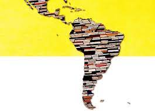
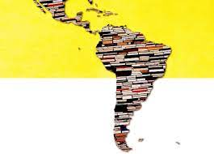
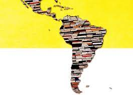

La literatura latinoamericana supone la existencia de un conjunto de textos, movimientos y tradiciones propios de una literatura emergente del vasto espacio que va desde México hasta la Argentina. La literatura latinoamericana engloba así toda la producción literaria de la América Latina, desde su nacimiento hasta hoy, tanto oral como escrita, y en todas las lenguas del territorio, principalmente el español, el portugués y el francés, pero también las lenguas indígenas, y las variantes creoles.
Así pues, la literatura latinoamericana no se define por su posición geográfica, ya que incluye gran multitud de países, además de autores emigrados fuera del marco territorial típico, ni tan solo por una lengua en común. Sus límites son más complejos de trazar, pero expertos como en La literatura latinoamericana como proceso encuentran el eje central de este enorme corpus literario en el aspecto cultural.
En sus palabras, “lo que delimita el área comprensiva de una literatura latinoamericana es la existencia de significaciones culturales comunes”. Podríamos decir que la literatura latinoamericana se define así por un imaginario o bagaje cultural colectivo que va más allá del de la literatura de cada país que conforma la América Latina.
| El concepto de la literatura Latinoamericana en la historia | Mucho de lo que entendemos hoy por literatura latinoamericana está sobre todo influido y caracterizado por momentos clave en la historia literaria de la América Latina. Por un lado, existe la influencia de la literatura salida de los nacionalismos del siglo XIX, cuando un aumento del sentimiento nacional llevó a muchos intelectuales a intentar definir, pautar y analizar las literaturas de sus países con el fin de reconocer su valor. El momento clave por excelencia en la definición de una literatura latinoamericana es aún más reciente y coincide con el BOOM LATINOAMERICANO en literatura que ocurrió en los años 60 y 70. Este fenómeno literario puso la mirada del mundo literario y editorial internacional sobre varios autores y obras de la América Latina, lo que hizo necesario de determinar unas pautas para definirla frente a ojos extranjeros. | Características | o Literatura que refleja la vida y las preocupaciones de los latinoamericanos. Esto puede verse reflejado a nivel regional, nacional o de la América Latina como conjunto. o En relación con el punto previo, se trata de una literatura donde abundan temáticas de injusticia social, inestabilidad política y/o problemas económicos o de clase, a nivel nacional o más amplio. o Literatura nacida de un mestizaje cultural. En ella se pueden apreciar las influencias tanto indígenas como europeas. o Gran proliferación de la forma literaria del cuento o el relato corto. Estos pueden ser de varios géneros, ya sea por ejemplo fantásticos o de realismo mágico como los de Julio Cortázar, como filosóficos, como los del argentino Jorge Luis Borges, entre muchos otros. o También destaca la importancia del movimiento literario del modernismo en la literatura latinoamericana, con autores como el poeta nicaragüense Rubén Darío. En él destaca la voluntad de establecer una independencia clara de la literatura latinoamericana respecto a la europea, aunque sí está influido por corrientes europeas como el parnasianismo o el simbolismo. | Autores importantes | Algunos de sus autores más de la literatura latinoamericana destacados (teniendo en cuenta que muchos experimentaron con más de una forma literaria): o Prosa: Gabriel García Márquez, Julio Cortázar, Jorge Luis Borges, Isabel Allende, Mario Vargas Llosa, Carlos Fuentes, Jorge Isaacs, Juan Carlos Onetti, Juan Rulfo, Andrés Caicedo, Ernesto Sábato, Silvina Ocampo (también poesía), Marcela Serrano o Poesía: Gabriela Mistral, Octavio Paz, Pablo Neruda, Alfonsina Storni, Rubén Darío, León de Greiff, Mario Benedetti, Alejandra Pizarnik, Olga Orozco, César Vallejo. o Teatro: autores anónimos de obras precolombinas como el Rabinal Achí maya entre otros, Sor Juana Inés de la Cruz (también poesía), Luis Valdez. Cabe destacar que el boom latinoamericano no afectó a la dramaturgia de la misma forma que la prosa a causa del carácter fuertemente editorial del fenómeno. | Realismo mágico | El realismo mágico fue el género por excelencia de la literatura latinoamericana. Aunque existe literatura latinoamericana en todos los géneros y movimientos literarios, el realismo mágico, nacido a mediados del siglo XX, ha estado dominado y perfeccionado mayoritariamente por autores latinoamericanos. Se considera que fue introducido en la América Latina por el venezolano Arturo Uslar Petri, y desarrollado por multitud de autores como Gabriel García Márquez (Cien años de soledad, El amor en los tiempos del cólera…), Carlos Fuentes (Aura), Juan Rulfo (Pedro Páramo), Isabel Allende (La casa de los espíritus), Demetrio Aguilera Malta (Siete lunas y siete serpientes), Elena Garro (Los recuerdos del porvenir), o Laura Esquivel (Como agua para chocolate), entre muchos otros. Destacan las distintas nacionalidades de estos autores, lo que hace que el realismo mágico atraviese fronteras nacionales para establecerse como género típicamente latinoamericano. Este género se caracteriza por: o Introducción de lo extraño, sobrenatural o fantástico en situaciones cotidianas y comunes, sin que esto sea percibido como extraordinario, sino como parte de la “normalidad”. o “Narrador impasible”, es decir, que presenta los hechos mágicos e insólitos sin explicación y con un aire de normalidad. o Influencia de elementos socioculturales propios. o A menudo inversiones en el tiempo, o narraciones que no siguen un orden totalmente cronológico. |
